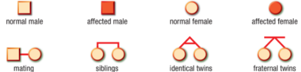
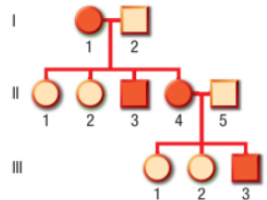

Squares represent males and circles represent females. Individuals who express a trait are shown in a shaded circle or square. Mating between two individuals is shown by a horizontal line, and children are connected to their parents with vertical lines.

Callout
Pedigree charts are also extremely useful for animal and plant breeders. Pedigrees can be used to track the inheritance of both desirable and undesirable traits and in some cases justify very high “stud fees” for prize animals. A farmer, for example, might ask for an opportunity to view a detailed pedigree of a bull before agreeing to pay for breeding with his prize cows. Similarly, a foal born to prize racehorse parents might be sold for millions of dollars based on their pedigrees—and long before its first race.
An example of a pedigree chart spanning three generations. In this pedigree, the grandmother (I-1), one of her sons (II-3), one of her daughters (II-4), and her grandson (III-3) have freckles. The allele for freckles (F ) is dominant over the allele for no freckles (f ).

Callout
Different organisms have different numbers of chromosomes. Humans have 23 pairs of chromosomes. One set of chromosomes consists of the sex chromosomes, while the other 22 sets are autosomes, the non-sex chromosomes. If an allele is found on an autosome, it is said to be under the control of autosomal inheritance.
Some alleles that cause genetic disorders are found on the X chromosome. Females (XX) have two copies of the gene, but males (XY), with only one X chromosome, have only a single copy. Since the allele with the disorder is found on the X chromosome and is recessive, this type of inheritance is called sex-linked and, more specifically, X-linked.
Some examples of X-linked inheritance are red–green color blindness, hemophilia A, and male-pattern baldness. Individuals who have hemophilia A are not able to form a clot when they are cut and may bleed for a lengthy period of time.
Callout
Hemophilia A is X-linked. A female carrier can pass on the hemophilia allele to her sons and daughters. Males cannot pass on hemophilia to their sons.